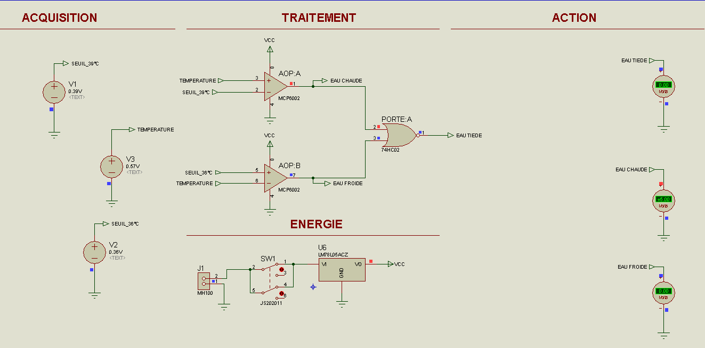
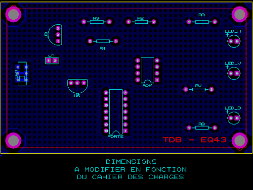

SOUAN Victor
SOUAN Victor
SOUAN Victor
SOUAN Victor
Critères C.1 à C.4 du référentiel simplifié — Portefeuille de preuves
Toutes les preuves de cette page viennent du projet Thermomètre de bain (TDB-EQ43) : le Dossier de Conception (DDC, rév. 3 du 24/11/2026) et le Dossier de Fabrication (DDF, rév. 2). Dans l'Équipe 43, je suis responsable avec Dylan des blocs Traitement et Action, et relecteur des blocs conçus par Enzo et Louis.
Architecture fonctionnelle, sans solution technique.
Le cahier des charges fixe 10 exigences (architecture, mesure, seuils, comparaisons, allumages, intensités, autonomie, marche/arrêt, dimensions, coût), rattachées aux 4 blocs fonctionnels du synoptique :
En vert : les deux blocs dont je suis responsable avec Dylan.
Choix justifiés de montages et de composants.
Double AOP MCP6002 : aucune contrainte de vitesse élevée, un AOP est plus économique qu'un comparateur dédié et réduit l'encombrement sur la carte.
Une porte logique NOR (74HC02) délivre directement l'état « tiède » à partir des deux sorties de comparateurs, sans ajouter d'inverseur.
Le niveau haut (5 V) allume la LED directement. Une logique négative aurait imposé des inverseurs supplémentaires, augmentant le coût et la surface PCB.
Intensité minimale à 20 mA : 63 mcd (rouge TLDR4900), 240 mcd (verte HLMP-Y801-JPP00) et 1 500 mcd (bleue MP000436). Toutes respectent le cahier des charges.
| C (eau chaude) | F (eau froide) | T = NOR(C, F) |
|---|---|---|
| 0 | 0 | 1 (tiède) |
| 0 | 1 | 0 (froide) |
| 1 | 0 | 0 (chaude) |
| 1 | 1 | 0 (cas impossible) |
Simulations sous Proteus ISIS avant la fabrication.
La tension du capteur LM35 (10 mV/°C) est comparée aux seuils. À chaque température simulée, une seule sortie bascule à 5 V :



Courant visé pour 50 mcd (3,23 mA verte, 5 mA rouge, 0,5 mA bleue), calcul par R = (4,975 − Vf) / If, puis normalisation en série E24
(910 Ω, 680 Ω, 4,7 kΩ) et contrôle des écarts sous ISIS :
Dossiers livrés le 24/11/2026, avec relecture croisée dans l'équipe.
Rédacteur des 6 paragraphes des blocs Comparaisons, Allumages et Intensités (conception préliminaire et détaillée).
Relecteur des autres chapitres (mesure, seuils, autonomie, dimensions, coût).
Matrice de conformité : les 10 exigences sont validées à l'issue de la conception.
Schéma électrique structurel, nomenclature complète (BOM), typons à l'échelle 1, plan de perçage, schéma d'implantation et gamme de fabrication.
Relecteur de l'ensemble du dossier avant tirage.
